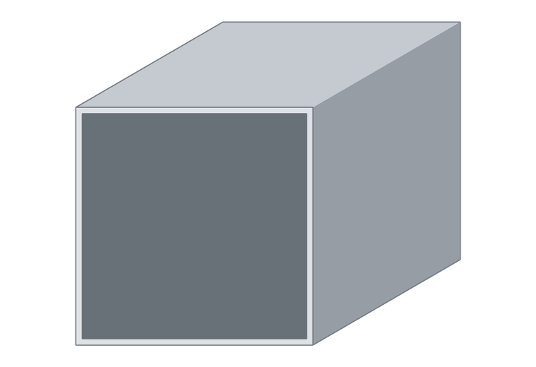

Tubo cuadrado de aluminio 75 × 75 × 2 mm
Muy usados en estructuras, bastidores, patas de muebles y carpintería metálica. La sección cuadrada facilita los encuentros a 90°.

Tubo cuadrado de aluminio 75 × 75 × 2 mm
- Lado
- 75 mm
- Espesor
- 2 mm
- Largos
- 6,05 m
- Aleación
- 6063
¿Necesitás esta medida cortada a un largo puntual? Trabajamos con siete extrusores: si existe en el país, lo conseguimos.
Cortamos a medida y entregamos en todo el país.